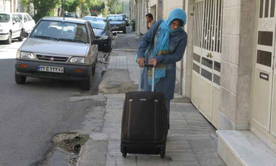

|
|
|
Browsing
Contact Us |
Campaigners |
Face to Face |
Tribune |
Interview |
News |
On the Web |
One Million |
Report
Farsi | Français | German | Italian | Spanish | العربية Also in this section
|
 Iranian Activist Zhila Bani-Yaghoub Packs her Bags and Heads to PrisonSaturday 22 September 2012 Change for Equality: Iranian activist Zhila Bani-Yaghoub packs her bags and heads to prison As foreign diplomats in Tehran were packing their suitcases to return home after a summit of the Non-Aligned Movement at the weekend, Zhila Bani-Yaghoub was packing hers to head to Evin prison. In Evin’s women wing, where she is expected to stay behind bars for one year as punishment for her work as a journalist, Bani-Yaghoub was reunited with some of her close friends and colleagues already in that very notorious prison, activists such as Nasrin Sotoudeh, Bahareh Hedayat and Mahsa Amrabadi. In 2010, the 42-year-old activist was sentenced to one year in prison on charges of "spreading propaganda against the regime" and "insulting president [Mahmoud Ahmadinejad]" because of the articles she wrote during the campaign period at the time of Iran’s 2009 presidential elections. Bani-Yaghoub, the editor of a women’s rights website, Focus on Iranian Women, is additionally banned from media and journalistic work for 30 years, Amnesty International said. In the aftermath of Iran’s post-election unrest, Bani-Yaghoub was arrested along with her husband, Bahman Ahmadi Amouie, who was the editor of the business daily paper Sarmayeh at the time. Amouie is currently held in Rajai-Shahr prison, serving a five year and four months jail term for conviction on charges of "gathering and colluding with intent to harm national security", "spreading propaganda against the system", "disrupting public security" and "insulting the president". While Bani-Yaghoub and her friend Mahsa Amrabadi are kept in Tehran’s Evin prison, their husbands (Amouie and Masoud Bastani) remain behind bars in another prison in the city of Karaj. Amnesty International has described Bani-Yaghoub as "a prisoner of conscious" and has urged Iran to "immediately and unconditionally" release her. "The Iranian authorities must immediately and unconditionally release Zhila Bani-Yaghoub, who is a prisoner of conscience held solely for peacefully exercising her rights to freedom of expression and allow her to resume her profession," said Amnesty’s deputy programme director for Middle East and North Africa, Ann Harrison. "Journalists in Iran face numerous restrictions on their legitimate work, including peaceful criticism of the authorities and reporting on human rights. The Iranian authorities must relax unlawful restrictions on them and release all journalists held solely for their journalism and human rights work," she added. Iran is one of the world’s worst jailers of journalists, according to the New York-based the the Committee to Protect Journalists (CPJ). Evin is home to some of the most respected Iranian journalists and activists including human rights lawyer Sotoudeh who has defended several political activists as well as juvenile offenders. In jail, Sotoudeh has joined some her of own clients. Tuesday marked the second anniversary of imprisoning Sotoudeh who is serving a six-year jail term. Iranian human rights webiste Hrana also reported on Thursday that another activist, Shiva Nazar Ahari, has also gone to Evin to serve her sentence. In January 2011, a six-year jail sentence for Nazar Ahari, a 26-year-old women’s rights activist, was commuted to four years and 74 lashes in an appeals court for "gathering and colluding against the national security", a vague charge used by Iran to convict several political prisoners in recent years. |